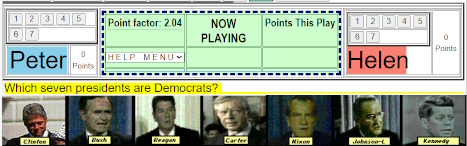
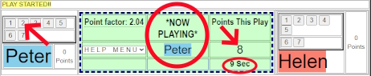
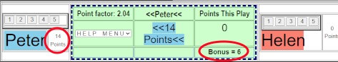
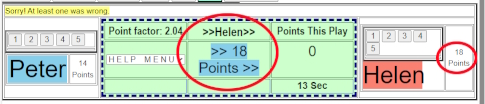

Players are challenged to answer a question by clicking-on or moving a set number of item.
Example: "Click-on the four states named after kings." or, "Put the five stages of grief in order."
with the potential score being the square of the number of items correctly answered.
Example: 1 item = 1 point, 2 items= 4 points, 3 items = 9 points, etc.
IMPORTANT: While they review the challenge, each player must keep their hands off the mouse.
At any time while reviewing the challenge, a player may announce a number he/she can answer. For example, example "I can do THREE!". The opposing player may say "OK", or may bid a higher number, like "I can do FIVE". Bidding continues until a player says "OK" or the maximum number is reached.
At which time the player winning the bid, must immediately press the corresponding numbered button above his/her name and the clock starts a count-down.
That player will then have a limited amount of time to complete the challenge and receive the point award.
However: If the challenge is not completed before the time runs out, or any one of the answers is incorrect, the point award goes to the other player.
[Things you don't need to know to play, but included if your are interested]
Built into the play of the game if the ability of the Game Master, who creates the Set, to balance the point awarded for the different Rounds in a Set. The default is to get the maximum number of points for each Round to equal 100. This is accomplished by multiplying the score by a Point Factor. For example, if there are 7 items to be clicked-on, the maximum point award would be 7 squared, or 49 points. The point factor would then be 2.04. [49 X 2.04 = around 100]
Added to the WINNING score is a "Time Bonus" for beating the clock. It starts at 2.0 and increments down to 1.0 over the allotted time. For example, if a player finishes in 75% of the time, the Bonus would be 1.25 times the winning score.
Below is an example of a Type B Game.

In the above image, the Question is to click-on the Seven Democrats in a grid of 16 former US Presidents. [Only the top seven are shown to save space]

In the above image, Peter has bid for 2 and has pressed the "2" button. The Potential Points are set at 8 [2 squared X 2.04 Point Factor] and he now has 9 seconds to accomplish the task.

In the above image, Peter has received 14 Points. [8 points for getting 2 right plus 6 Bonus Points for answering quickly.

In the above image, Peter tried for 3 more presidents and missed at least one. The result is that Helen gets 18 Points [3 squared times the 2.04 Point Factor]